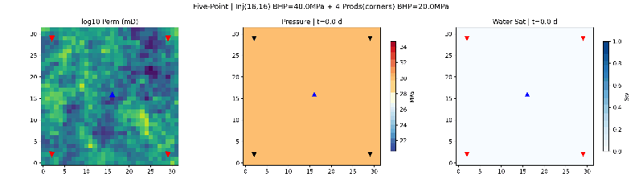

经典五点井网：中心 1 口注入井 + 四角 4 口生产井，模拟水驱油过程。
| 参数 | 值 |
|---|---|
| 网格 | 32 × 32 × 1 |
| 网格尺寸 | 50m × 50m × 10m |
| 渗透率 | 非均质（SGSIM 随机场） |
| 初始压力 | 30 MPa |
| 初始含水饱和度 | 0.0（纯油藏） |
| 注入井 BHP | 40 MPa（中心 16,16） |
| 生产井 BHP | 20 MPa（四角 2,2 / 29,2 / 2,29 / 29,29） |
| 模拟时间 | 3 年 |

左：渗透率场（静态）；中：压力场动画（注入井高压→生产井低压）；右：含水饱和度动画（水从中心向四角辐射推进）